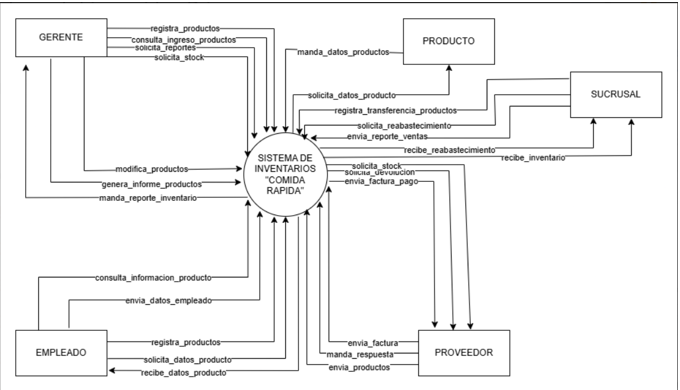

Centro de comida rapida "PAPAYA"
Se pide realizar un sistema que maneje el inventario del puesto de comida rápida “PAPAYA” bajo el paradigma del análisis estructurado.

El encargado de sucursal registra el ingreso de insumos recibidos del proveedor.
El encargado registra el consumo/venta de productos.
La sucursal solicita stock adicional al sistema.
El sistema detecta stock por debajo del mínimo y genera una alerta automática.
La sucursal solicita una transferencia de insumos desde otra sucursal.
El gerente solicita reporte de inventario general o por sucursal.
El gerente solicita reporte de consumo diario o semanal.
El gerente emite una orden de compra a un proveedor.
El gerente autoriza una transferencia de insumos entre sucursales.
El gerente registra o modifica parámetros de stock mínimo por sucursal.
El sistema envía automáticamente una orden de reposición al proveedor ante stock crítico.
El proveedor entrega insumos y el sistema registra el ingreso en la sucursal.
El proveedor envía una factura al sistema.
El sistema registra los datos de pago al proveedor.
El encargado registra una baja o merma de insumos con justificación.
El sistema genera el cierre diario de inventario por sucursal.
El sistema consolida el inventario global de todas las sucursales.